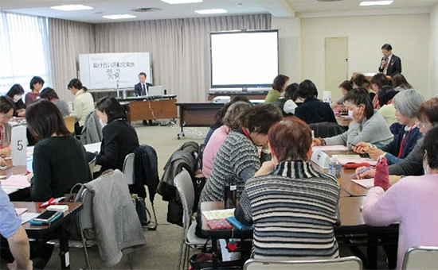

2018年度助け合い活動交流会報告
高齢者の消費者被害トラブル学習と助け合い活動をグループ交流
1月17日（木）10時30分より、さいたま市民会館うらわにて、助け合い活動に関わる組合員・職員4生協44人の参加で開催しました。
1. まとめ（開催目的に照らして）

- (1) 助け合いに関わる各生協の活動の報告により、互いの活動の理解を深めることができました。
- (2) 交流の中では、活動地域の近い組合員どうしを同じグループにするなど工夫したことで、生協の枠を越えて地域の中でつながりあい、助け合い活動を充実させていくためのきっかけづくりができました。
- (3) 高齢者の消費者被害トラブル状況や未然防止について、弁護士の講義やDVDの視聴で学習しました。
2. 学習会
- (1) 講座の受講
「地域における高齢者の見守り～消費者被害の未然防止～」のテーマで、武藤弁護士からの講義を受講し、高齢者の見守りと消費生活センターへ繋ぐことの重要性を学習しました。 - (2) DVDの視聴
「高めよう！見守り力」の消費者庁作成のDVDを視聴し、具体的な行動内容を映像で学習しました。
3. 助け合い活動交流会の実施内容
午後からは、5つのテーブルにわかれて交流をおこないました。自己紹介から始まり、各生協・団体の日頃の活動について交流をおこないました。交流の最後には、2つのテーブルから交流した内容についての報告をおこないました。
4. 参加者アンケート（抜粋）
- 法律等、難しい問題もありましたが、とにかく消費生活センターへ相談すること、188へ電話すること等大切な情報でした
- 消費生活センターの名称は知っていたが、あまり考えていませんでした。もっと勉強し、自分を守るだけでなく、地域の方々との交流及び見守りも本当に必要だと感じています
- DVDは、短時間によく理解できる。借りることもできるのかな？借りて地域のみなさんと見てみたい
- 初めて会う方もいて、たくさんお話ができ、困っていることへのアドバイスやヒントになるものを得ることができました
- 心構え、考え方等、他団体の事を知り学習しました
- 事例報告をして、その件でいろいろな立場からの意見を聞いてみたい
- 話し合いの中で、私たちはまず行政が行っている助け合いの内容を知る必要性があると思いました。それを受けて、自分たちの団体は何ができるかを考えていきたい